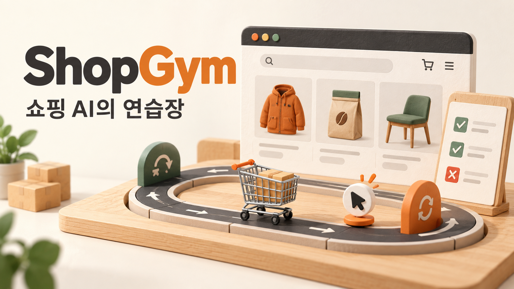
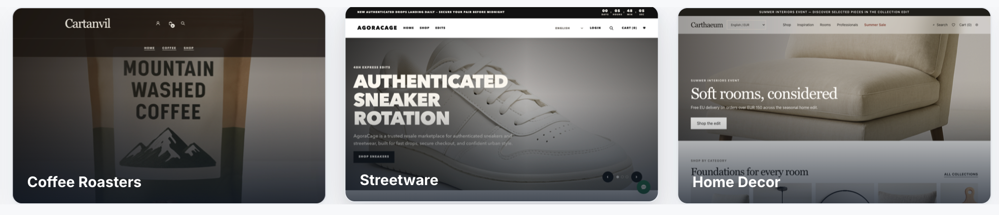

HELLO, HUMAN! CASE STUDY 07
Shopify는 쇼핑 AI의
연습장을 어떻게 만들었나
쇼핑 AI를 같은 조건에서 비교하고,
AI로 시험장을 만드는 ShopGym 이야기

쇼핑 AI에게 다음과 같은 부탁을 했다고 해 보겠습니다.
10만 원 이하의 파란색 재킷을 찾고, 반품 정책을 확인한 뒤, M 사이즈를 장바구니에 담아줘.
설명을 위해 만든 요청입니다. 이 일을 하려면 AI는 쇼핑몰 화면을 읽고, 검색과 필터로 상품을 찾고, 옵션을 골라 장바구니에 담아야 합니다. 재킷을 찾았더라도 사이즈를 잘못 골랐다면 요청을 제대로 마친 것이 아닙니다. 이처럼 사용자의 요청에 따라 화면을 탐색하고 조작하는 AI를 쇼핑 에이전트라고 부릅니다.
한 번의 성공을 확인하는 것과 AI의 성능을 비교하는 것은 또 다른 문제입니다. AI 모델을 바꾼 뒤 성공률이 높아졌다고 해도, 그사이 쇼핑몰 화면이 더 단순해졌다면 무엇 덕분에 나아졌는지 판단하기 어렵습니다.
Shopify와 노스캐롤라이나주립대 연구진이 공개한 ShopGym은 이 문제를 풀기 위한 도구입니다. 실제 쇼핑몰의 특징을 참고해 가상 쇼핑몰을 만들고, 그 안에서 풀 시험 문제도 준비합니다. 시험할 때마다 환경을 처음 상태로 되돌려, 여러 쇼핑 에이전트를 같은 조건에서 비교할 수 있도록 설계했습니다.
이 사례에서 함께 볼 부분은 두 가지입니다. 쇼핑 AI를 공정하게 비교할 시험장을 어떻게 만드는지, 그리고 그 시험장을 만드는 긴 작업을 AI가 어떻게 이어 가는지입니다. 두 과정 모두 다음에 할 일과 확인할 결과를 분명하게 남기는 데서 출발합니다.
근거 · Shopify의 문제 정의와 제작기 ↗ · 연구 논문 v1 ↗
쇼핑몰이 바뀌면
시험도 바뀐다
같은 요청이라도 시험 장소가 달라지면 난도가 달라집니다. 실제 쇼핑몰에서는 상품과 가격이 바뀌고, 품절이 발생하며, 메뉴와 화면 배치도 달라집니다. 자동화된 접속을 막거나 요청 횟수를 제한해 AI의 작업이 중간에 끊기기도 합니다.
시험용 쇼핑몰을 따로 만들면 이런 조건을 고정할 수 있습니다. 하지만 업종마다 다른 상품 구성과 검색 방식을 하나씩 구현하려면 일이 많아집니다. 그렇다고 화면 몇 개만 간단히 만들면 실제 쇼핑에서 겪는 어려움을 충분히 담기 힘듭니다.
| 평가 장소 | 얻는 것 | 해결해야 할 문제 |
|---|---|---|
| 실제 운영 쇼핑몰 | 실제 화면에서 쇼핑하는 경험 | 상품·화면·접속 조건이 계속 달라짐 |
| 직접 만든 시험용 쇼핑몰 | 같은 조건으로 반복하는 시험 | 다양한 상품과 화면을 직접 구현해야 함 |
| ShopGym의 가상 쇼핑몰 | 실제 구조를 참고하면서 조건을 고정한 시험 | 현실과 얼마나 닮았는지 별도로 확인해야 함 |
ShopGym은 먼저 실제 쇼핑몰을 살펴보고, 어떤 기능을 어떤 모습으로 만들지 문서와 데이터로 정리합니다. 이런 설계 기록을 명세라고 합니다. AI는 이 명세를 바탕으로 작동하는 가상 쇼핑몰을 만듭니다. 실제 운영 환경과 분리해 둔 시험 공간은 샌드박스라고 부릅니다.
이렇게 만든 쇼핑몰의 조건을 고정해 두면, AI를 바꿔서 좋아진 것인지 시험 환경이 달라져서 쉬워진 것인지 구분하기가 수월해집니다.
시험장을 만드는 ShopArena,
문제를 만드는 ShopGuru
ShopGym의 두 가지 핵심 도구는 역할을 나눠 맡습니다. ShopArena는 실제 쇼핑몰을 살펴보고 가상 쇼핑몰을 만듭니다. ShopGuru는 완성된 쇼핑몰에서 풀 과제, 즉 시험 문제를 만들고 평가를 돕습니다.
여기에는 서로 다른 일을 하는 AI가 등장합니다. 코드를 작성해 시험장을 만드는 AI는 코딩 에이전트이고, 완성된 시험장에서 상품을 찾고 장바구니를 조작하는 AI는 앞서 설명한 쇼핑 에이전트입니다.
- 실제 쇼핑몰 관찰
화면과 기능 살펴보기
- 명세 작성
만들어야 할 내용 기록
- 가상 쇼핑몰 생성
데이터와 화면을 만들고 검사
만든 쇼핑몰의 상품·필터·정책을 넘깁니다
- 쇼핑몰 정보 읽기
상품·옵션·기능 확인
- 문제 만들기
정해 둔 규칙이나 AI로 출제
- 문제 검증
상품과 필터가 실제로 있는지 검사
쇼핑몰과 과제를 고정해 평가에 사용합니다
- 처음 상태로 시작
같은 쇼핑몰·문제·채점 기준
- 쇼핑 요청 수행
비교할 모델과 설정으로 실행
- 결과 확인
성공 여부와 실패 이유 확인
제작기와 공개 코드를 바탕으로 정리한 설명용 도식입니다. 앞의 두 단계에서 시험을 준비하고, 마지막 단계에서 쇼핑 에이전트를 비교합니다.

살펴본 내용을 다음 작업의 설계도로 남긴다
ShopArena는 쇼핑몰을 살펴보면서 화면 구조와 기능을 명세로 정리합니다. 이때 브랜드명처럼 원래 쇼핑몰을 식별할 수 있는 정보는 빼도록 지시합니다. 다만 이런 지시가 모든 식별 정보의 제거를 보장하지는 않습니다.
쇼핑몰을 만드는 단계에서는 이 명세를 설계도로 사용합니다. 확인한 공개 코드에는 아래와 같은 파일이 남습니다. 각 파일은 사람과 AI, 프로그램이 다음 작업에 필요한 정보를 공유하는 역할을 합니다.
| 파일 | 담는 내용 | 다음에 쓰는 곳 |
|---|---|---|
manual.md | 쇼핑몰 구성과 기능 설명 | 사람과 AI가 만들 내용을 이해 |
capabilities.json | 프로그램이 읽기 좋게 정리한 기능 정보 | 기능별 조건을 프로그램으로 처리 |
stats.json | 상품과 상품 묶음 등의 통계 | 만들 데이터의 규모와 특성을 결정 |
manifest.json | 작업 요약과 결과를 합칠 때 생긴 충돌 기록 | 관찰 결과를 추적하고 점검 |
이렇게 기록을 남기면 무엇을 바꿔야 할지도 찾기 쉽습니다. 예를 들어 검색 필터 구성을 바꾸고 싶다면 관련 명세를 수정한 뒤 새 쇼핑몰을 만들 수 있습니다. 사람은 명세를 읽으며 어떤 조건으로 시험장을 만들었는지 검토할 수 있습니다.
작은 구현 단계마다 검사하고 수정한다
쇼핑몰은 홈페이지, 상품 목록, 상세 화면, 장바구니, 검색과 필터처럼 작은 기능 단위로 나눠 만듭니다. 확인한 코드에는 데이터 형식이 맞는지, 실행할 형태로 묶을 수 있는지, 필요한 데이터를 사용하는지 등을 살피는 검사가 포함돼 있습니다. 페이지 사이의 이동 경로, 장바구니 구성, 페이지의 정상 응답 여부도 검사 대상입니다.
먼저 정해 둔 규칙으로 문제를 찾고, 설정에 따라 AI가 코드와 화면을 검토하는 절차를 더합니다. 검사에서 실패를 뜻하는 FAIL 판정이 나오면, 해당 작업을 다시 할 일로 표시합니다. 실패 이유도 기록해 다음 수정에 전달합니다.
수정하기 전에 읽을 기록명세 + 현재 코드 + 이전 검사 결과
- ①코드 생성·수정
이번 작업을 구현합니다
- ②검사
규칙 검사 + 설정에 따른 AI 검토
실패 이유를 남기고, 같은 작업을 다시 하도록 표시합니다.
다음 기능을 만드는 작업을 이어 갑니다.
다음 단계로 넘어갔더라도, 참고용으로만 남긴 검사 결과나 생략된 검사가 있는지 따로 확인해야 합니다.
우리도 AI에게 일을 맡길 때 이 방식을 참고할 수 있습니다. 작업을 시작하기 전에 어떤 검사를 거쳐야 다음 단계로 넘어갈 수 있는지 정해 두는 것입니다. 그러면 완료 여부를 판단할 기준과, 실패했을 때 고칠 부분이 함께 남습니다.
근거 · 관찰 결과를 저장하는 방식 ↗ · 검사 등록과 순서 ↗ · FAIL 처리와 피드백 ↗
오래 기억하는 대신
필요한 기록을 다시 읽는다
이처럼 여러 기능을 차례로 만들다 보면 작업이 길어집니다. 중간에 AI를 새로 실행하거나 작업이 끊겼을 때도 어디서부터 이어 가야 할지 알 수 있어야 합니다.
ShopGym의 공개 코드에서는 Pi라는 AI 코딩 도구를 실행할 때 이전 대화를 이어 쓰지 않도록 합니다. 대신 이번 작업의 지시 파일과 사용할 기능을 지정해 전달합니다. 새로 실행된 AI는 필요한 내용을 작업 파일에서 다시 읽습니다.
무엇을 만들어야 하는가
어디까지 구현했는가
어디서, 왜 실패했는가
새로 실행된 코딩 에이전트가
다음 작업을 이어 갑니다
명세에는 만들 내용이, 코드에는 지금까지 만든 결과가, 검증 보고서에는 고칠 부분이 남습니다. 이 기록들이 다음 작업의 출발점이 됩니다. 새 대화로 시작한다는 설명이 브라우저 등 모든 실행 상태까지 매번 초기화한다는 뜻은 아닙니다.
중단 후에는 필요한 범위를 다시 실행한다
작업 순서를 관리하는 프로그램은 이전에 어디까지 실행했는지, 입력이 달라졌는지, 결과 파일이 남아 있는지 확인합니다. 앞 단계의 내용이 바뀌었다면 그 영향을 받는 뒤 단계도 다시 실행할지 판단합니다.
오래 걸리는 상품 상세 정보 생성은 더 잘게 나눠 저장합니다. 쇼핑몰의 상품 묶음을 뜻하는 컬렉션별로 검증한 결과를 파일에 남깁니다. 작업을 다시 시작할 때는 이 파일들을 살펴보고 재사용할 수 있는 부분을 구분합니다.
예를 들어 열 개의 컬렉션 중 여덟 개를 만든 뒤 작업이 끊겼다고 해 보겠습니다. 이미 만든 여덟 개를 그대로 쓸 수 있는지 확인하고, 조건에 맞는 결과는 재사용하면서 남은 작업을 이어 가는 방식입니다. 열 개와 여덟 개는 이해를 돕기 위한 가상의 숫자입니다.
AI 작업이 길어질수록 실패할 가능성도 고려해야 합니다. 다시 시도할 방법과 끝낸 결과를 보관할 방법을 함께 마련하면, 중간에 문제가 생겼을 때 처음부터 다시 해야 하는 일을 줄일 수 있습니다.
근거 · Pi 호출 방식 ↗ · 재실행 판단 ↗ · 컬렉션별 결과 저장 ↗
시험 문제에도
정답의 근거가 필요하다
시험장이 준비되면 이제 그 안에서 풀 문제를 만들 차례입니다. ShopGuru는 가상 쇼핑몰의 상품과 기능을 바탕으로 과제를 만듭니다. 논문과 공개 문서에서는 다음 일곱 가지 능력을 평가합니다.
| 평가할 능력 | 과제의 예 |
|---|---|
| 정확한 상품 검색 | 이름이 지정된 상품 찾기 |
| 유사 상품 검색 | 요청에 맞는 대체 상품 찾기 |
| 카테고리 탐색 | 지정한 상품군으로 이동해 상품 선택 |
| 필터 사용 | 상품군에 맞는 조건으로 검색 결과 좁히기 |
| 배송 정보 탐색 | 배송 정책 페이지 찾기 |
| 반품 정보 탐색 | 반품 정책 페이지 찾기 |
| 여러 단계의 쇼핑 | 상품 탐색부터 필터·정렬·확인·장바구니 담기까지 수행 |
여기서 배송·반품 정보 탐색에는 관련 정책 페이지를 찾는 일이 포함됩니다. 실제로 배송을 처리하거나 반품을 접수하는 업무까지 평가하는 것은 아닙니다.
기본 문제는 상품 데이터와 정해 둔 규칙으로 만듭니다. 예를 들어 특정 상품을 찾는 문제라면 상품명과 해당 상품의 경로를 읽어 요청 문장과 성공 조건을 정합니다. 살 수 있는 옵션이 하나도 없는 상품 등은 출제 후보에서 뺍니다.
여러 단계를 거쳐야 하는 문제는 문장을 이해하고 생성하는 AI인 대규모 언어 모델(LLM)이 작성합니다. 이후 문제에 등장하는 상품과 컬렉션, 필터가 쇼핑몰에 실제로 있는지 검사합니다. 맞지 않는 부분은 수정할 수 있도록 피드백을 남깁니다.
가령 전체 의류 중에는 M 사이즈가 있어도, 문제에서 지정한 상품 묶음에는 없을 수 있습니다. 이런 차이를 확인해야 AI가 풀 수 없는 문제를 잘못 내는 일을 줄일 수 있습니다.
문제가 맞는지 확인한 뒤, AI의 수행을 채점한다
출제 검증
문제에 나온 상품과 필터가 실제로 있는지 확인합니다. 문제 자체에 잘못된 조건이 들어가지 않도록 하는 절차입니다.
수행 채점
AI가 요청을 제대로 수행했는지 확인합니다. 실제 행동 기록을 읽고 미리 정한 성공 조건과 대조합니다.
확인한 평가 코드에는 특정 페이지를 방문했는지 정해 둔 규칙으로 확인하는 경로가 있습니다. 이 조건을 통과하면 LLM이 수행 기록을 읽고 요청을 제대로 이행했는지 판단합니다. 페이지 방문 여부만으로 쇼핑 요청 전체의 성공을 결정하지는 않습니다.
우리 업무에 적용할 때는 무엇을 직접 대조하고 무엇을 AI에게 판단하게 할지 정해 두면 좋겠습니다. 예를 들어 장바구니의 상품·옵션·수량은 실제로 저장된 값과 비교할 수 있습니다. 설명이 적절한지처럼 해석이 필요한 부분에는 AI의 판단을 활용할 수 있습니다. 이는 헬로우 휴먼의 적용 제안입니다.
근거 · 역량·과제 검증 문서 ↗ · 상품 검색 과제 생성 ↗ · 과제 채점 방식 ↗
연구가 확인한 것은 무엇인가
그렇다면 이렇게 만든 시험장은 평가에 얼마나 쓸 만할까요? 연구진은 6개의 가상 쇼핑몰과 224개의 과제를 다뤘습니다. 쇼핑몰은 두 종류로 나뉩니다. 상품 데이터까지 새로 만든 완전 합성 쇼핑몰 3개와, 실제 쇼핑몰의 상품 데이터를 가져와 만든 트윈(twin) 3개입니다.
연구진은 화면 구조가 현실과 비슷한지, AI의 행동과 성공률도 비슷하게 나타나는지, 만든 문제가 충분히 어려운지를 각각 살폈습니다.
| 검증 | 비교 대상 | 확인하려는 것 |
|---|---|---|
| 구조 검증 | 실제 쇼핑몰 7개와 합성 쇼핑몰 3개 | 화면 상태와 조작 요소의 복잡성이 비슷한가 |
| 행동 검증 | 실제 쇼핑몰과 그 상품 데이터를 쓴 트윈 | AI의 과제 성공률이 비슷하게 나타나는가 |
| 과제 난도 검증 | 완전 합성 쇼핑몰에서 만든 과제 | 모델의 능력을 평가할 만큼 어려운가 |
이 세 실험은 구분해서 읽어야 합니다. 구조 검증은 실제 쇼핑몰 하나와 그것을 옮긴 가상 쇼핑몰 하나를 일대일로 짝지어 비교한 실험이 아닙니다. 반면 행동 검증에서는 실제 상품 데이터를 사용한 트윈을 비교했습니다. 따라서 이 결과만으로 가상 데이터가 현실의 쇼핑 환경을 완전히 재현한다고 말할 수는 없습니다.
아래는 완전 합성 쇼핑몰에서 여러 단계의 쇼핑 과제를 풀게 한 결과입니다. AI가 브라우저를 조작하며 과제를 수행하도록 돕는 도구인 BrowserGym을 사용했습니다.
- 평가 환경
- 완전 합성 쇼핑몰 3개
- 과제
- 여러 단계의 쇼핑
- 실행 도구
- BrowserGym
색이 채워진 길이 = 과제 성공률
모든 막대는 0~100%의 같은 눈금을 사용합니다. 수치는 위 조건에서 얻은 성공률이며, 224개 전체 과제의 평균이나 도입 전후의 개선율이 아닙니다. 연구진의 보고를 옮긴 것으로, 이 글에서 실험을 다시 실행하지는 않았습니다.
이 결과를 보면 만든 과제가 당시 시험한 모델들에게도 쉽지 않았음을 알 수 있습니다. 별도로 진행한 실제 쇼핑몰과 트윈의 비교에서는, 여러 단계 과제를 풀 때 모델들의 성적 순위 등이 유지됐습니다. 다만 일부 단일 과제에서는 성공률에 차이가 있었습니다.
성공률이 비슷하다고 해서 같은 이유로 실패했다고 볼 수는 없습니다. 어떤 단계에서 왜 막혔는지는 수행 기록을 따로 살펴야 합니다.
이 연구는 실제 쇼핑몰에서 얻는 평가 결과를 일부 유지하면서, 시험 조건을 고정할 수 있는 방법을 보여 줍니다. 여기까지 확인한 것은 시험 환경과 과제의 유용성입니다. 이 환경에서 AI를 훈련했을 때 실제 서비스의 성능까지 좋아지는지는 추가 검증이 필요합니다.
근거 · 논문 3절 · 환경 검증 ↗ · 논문 4절 · 과제 난도와 수치 ↗ · 실험 해석과 후속 훈련 계획 ↗
실제 서비스에 쓰기 전에
확인할 세 가지
같은 시험을 반복하려면 문제와 설정을 보관해야 한다
공개 문서는 정해 둔 규칙으로 만드는 과제와 LLM이 만드는 여러 단계 과제를 구분합니다. LLM이 만드는 과제는 같은 설정으로 다시 요청해도 결과가 달라질 수 있습니다. 무작위 선택의 출발값인 ‘시드’를 고정해도 마찬가지입니다.
그래서 모델을 비교할 때는 쇼핑몰 코드와 데이터에 더해, 이미 만든 과제 파일, 시험 시작 상태, 모델·도구 설정, 채점 기준을 함께 보관하고 고정해야 합니다. AI에게 같은 지시를 다시 보내는 것만으로는 같은 시험을 보장할 수 없습니다.
어떤 실패에서 다음 작업을 멈출지 정해야 한다
검사를 했다는 사실만으로 결과를 안심하고 쓸 수 있는 것도 아닙니다. 2026년 10월 19일 확인한 코드에서는 작업 중 FAIL 판정이 나오면 다시 처리하도록 합니다. 하지만 일부 검사는 결과를 참고용으로 남기며, 실패해도 전체 실행을 멈추지 않습니다.
| 검사 종류 | 확인한 코드의 동작 | 따로 확인할 것 |
|---|---|---|
| 작업 중 규칙 검사 | FAIL이면 같은 작업을 다시 하도록 표시 | 어떤 검사에서 왜 실패했는가 |
| AI 화면 검사 | 설정이나 도구 설치 여부에 따라 생략될 수 있음. 재시도 한도에 이르면 참고용 결과로 바뀔 수 있음 | 검사를 실제로 했는지, 어떤 결과가 나왔는지 |
| 최종 환경 평가 | 결과를 참고용 보고서로 남김. 실패·오류가 있어도 실행은 완료될 수 있음 | 실행이 끝났다는 표시와 별개로 평가 보고서의 내용 |
도입하는 팀은 어떤 실패를 나중에 고칠 일로 남길지, 어떤 실패에서는 결과의 사용을 막을지 정해야 합니다. ‘실행이 끝났다’는 상태와 ‘우리 기준에 맞는다’는 판단을 따로 확인해야 합니다.
지금 평가하는 범위는 상품 탐색과 화면 조작에 가깝다
논문은 로그인, 주문서 작성과 결제, 고객 상담, 구매 후 업무, 여러 쇼핑몰 사이의 비교, 다국어 등을 평가 범위에서 제외합니다. 재고가 바뀌는 상황, 사용자별 개인화, 외부 서비스 연동, 응답 시간의 변화도 충분히 다루지 않습니다.
화면 뒤에서 데이터를 처리하는 서버 코드에도 이런 범위가 드러납니다. 장바구니 응답에 담긴 결제 주소는 실제 결제로 이어지지 않는 임시 값이고, 세금 값은 비어 있습니다. 합계도 추가 비용을 반영하기 전 금액인 소계와 같습니다.
국내 커머스의 쿠폰 중복, 복합 결제, 배송비, 취소·정산 규칙까지 시험하려면 그 업무에 맞는 환경과 정답 기준을 더해야 합니다. 우선 브라우저에서 상품을 찾고 화면을 조작하는 시험부터 시작해, 우리 업무에 필요한 규칙으로 범위를 넓혀 가는 것이 좋겠습니다.
근거 · 재생성과 재현성 ↗ · 화면 검사 등록 조건 ↗ · 최종 평가의 참고용 판정 ↗ · 논문 부록 C · 한계 ↗ · 장바구니 응답 구현 ↗
커머스 팀이
작게 시작하는 방법
이 접근을 우리 업무에 가져온다면 어디서 시작하면 좋을까요? 아래는 국내 커머스 업무를 가정한 헬로우 휴먼의 적용 제안입니다. ShopGym에 이미 있는 기능이나 직접 확인한 도입 성과를 소개하는 내용은 아닙니다.
처음에는 시험용 쇼핑몰 하나와 적은 수의 과제로 시작할 수 있습니다. 예를 들어 기본 과제 20개를 정해 두고, 모델이나 AI에 전달하는 지시문인 프롬프트를 바꿀 때마다 같은 조건으로 실행해 봅니다. 20개는 정해진 기준이 아니라 작은 실험을 시작하기 위한 제안입니다.
| 업무 상황 | 확인할 성공 조건 |
|---|---|
| 특정 색상·크기의 상품 선택 | 장바구니 상품·옵션·수량이 요청과 일치 |
| 쿠폰을 반영한 가격 안내 | 사용할 수 있는 쿠폰과 할인 규칙에 맞게 가격 계산 |
| 배송 안내 | 배송비·도착 예정일의 근거를 제시하고, 확인하지 못한 정보는 구분 |
| 조건에 맞는 상품이 없음 | 조건을 임의로 바꾸지 않고, 이유를 설명하거나 필요한 내용을 다시 질문 |
이 중 상품 선택부터 시험한다면 상품 두세 종류와 옵션 몇 개로 범위를 좁혀도 됩니다. 원하는 상품을 정상적으로 고르는 경우에 더해, 사이즈가 품절이거나 검색 결과가 없거나 장바구니에 담는 작업이 실패하는 경우도 넣습니다. 첫 실험에서는 결제와 실제 주문을 제외합니다.
사이즈가 다르면 실패입니다
요청“파란색 M 재킷 한 개를 담아 주세요.”
사이즈 M · 수량 1개
사이즈 L · 수량 1개
불일치 · 사이즈 M ≠ L완료했다는 답변과 실제 상태를 따로 확인합니다.
- 시험 시작 상태
- 같은 버전의 상품·옵션·재고 데이터, 빈 장바구니
- 성공 조건
- 장바구니의 상품·옵션·수량이 요청과 일치
- 비교할 대상
- 바꾸기 전과 후의 모델·프롬프트로 수행한 결과
- 실패 시 남길 기록
- 막힌 단계, 참고한 데이터, 실행한 동작과 결과
실제 AI나 쇼핑 시스템을 실행하지 않은 설명용 예시입니다.
결과를 남길 때는 점수와 함께 어느 단계에서 실패했는지, 어떤 데이터를 참고했는지, 실행 시간과 비용은 얼마였는지도 기록합니다. 그래야 무엇부터 고칠지 찾기 쉽습니다. 사람이 실패 원인을 분류하고 수정하는 데 든 시간도 함께 보면 좋습니다.
과제 중 일부는 개발하면서 반복해 확인하고, 다른 일부는 마지막 점검용으로 남겨 둘 수 있습니다. 늘 보던 문제에서만 좋아진 것인지 확인하는 데 도움이 됩니다.
AI가 화면을 누르는 대신 프로그램에 직접 요청을 보내는 방식이라면, 그 요청을 받는 API를 시험 대상으로 삼을 수 있습니다. API는 프로그램끼리 요청과 응답을 주고받는 창구입니다. 이미 테스트용 API가 있다면, 고정된 데이터를 준비하고 사용자의 요청·시작 상태·예상 결과·실제 요청 기록을 한 묶음으로 남기는 방식을 적용해 볼 수 있습니다.
화면을 조작하는 AI는 화면과 이동 경로를, API를 사용하는 AI는 응답과 처리 후의 상태를 확인해야 합니다. 우리 AI가 실제로 일하는 방식에 맞춰 시험장을 준비하는 것이 중요합니다.
완료 조건과
다시 시작할 지점을 함께 설계하기
ShopGym에서는 시험장을 만들고 문제를 준비하는 작업을 여러 단계로 나눠 AI에게 맡깁니다. 다음 작업에 필요한 내용은 명세로, 고칠 부분은 검사 결과로 남깁니다. 중간에 멈추더라도 쓸 수 있는 결과는 보관해 다시 이어 갑니다.
AI에게 일을 맡길 때는 ‘무엇을 하면 끝난 것인지’, ‘그것을 어떻게 확인할지’, ‘실패하면 어디서 다시 시작할지’를 함께 정해야 합니다.
우리 업무에서도 기능 하나를 골라, 제대로 작동했는지 확인할 조건을 적어 보면 좋겠습니다. 같은 조건에서 다시 시험하고 실패 이유를 찾아 고칠 수 있다면, 시연에 성공한 기능을 실제 서비스로 발전시키는 데 필요한 근거가 쌓입니다.
직접 살펴볼 자료
- Shopify · ShopGym 제작기 (2026. 10. 01) ↗
- ShopGym 논문 v1 (2026. 05. 15) · 연구 설계, 실험 결과와 한계 ↗
- 공식 프로젝트 · 공개 가상 쇼핑몰과 연구 소개 ↗
- 공개 저장소 · 확인한 커밋으로 고정한 코드 ↗
- ShopGuru 문서 · 과제 생성, 평가, 재현성 ↗
자료 확인일은 2026. 10. 19.입니다. 구현 설명은 공개 코드의 특정 버전인 커밋 ec8a5b4cd1f84cf2526939771897a9676aaea6b8을 읽고 정리했습니다. 이 코드의 시점은 논문 발표 시점과 다릅니다. 쇼핑몰 생성 도구와 쇼핑 에이전트를 직접 실행하지는 않았으며, 실험 수치는 연구진이 보고한 값입니다.
대표 일러스트는 헬로우 휴먼이 AI로 생성했습니다. 본문의 가상 쇼핑몰 화면은 Shopify 제작기와 공식 프로젝트의 원본을 수정 없이 인용했습니다. 원본 화면의 권리는 원권리자에게 있으며 별도의 이미지 재사용 라이선스는 확인하지 않았습니다. 흐름·검사 도식과 적용 예시는 헬로우 휴먼이 구성했고, 성공률 막대는 논문 값을 옮겨 그렸습니다.
AI 사례연구 목록으로 돌아가기